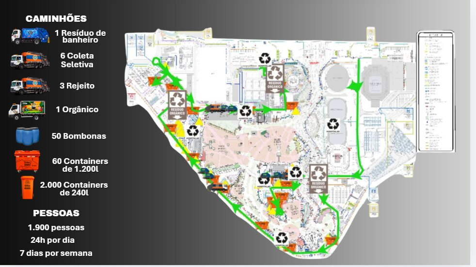

Operação 2026 | Das reuniões de alinhamento à Cidade do Rock
O trabalho da COMLURB no Rock in Rio 2026 começou antes da abertura dos portões. Nas primeiras reuniões de alinhamento, a DSU revisou as gravimetrias e os resultados das edições anteriores, discutiu a separação dos resíduos com a organização do festival e definiu como acompanhar cada fluxo da coleta à destinação. Desse trabalho saiu a meta operacional de desviar 70% dos resíduos do aterro. A apresentação de alinhamento reuniu essas decisões e mostrou aos fornecedores como o descarte em cada ponto de geração poderia contribuir para a meta. Ver a apresentação de alinhamento no Canva
Da montagem à desmontagem, a operação envolveu limpeza da Cidade do Rock, mobilização das equipes por setor e turno, distribuição de contêineres e bombonas e programação da frota. Os fornecedores foram orientados a separar os materiais no ponto de geração, e a coleta foi organizada em fluxos de recicláveis, orgânicos, rejeitos e resíduos de banheiros. As equipes acompanharam as viagens e as pesagens para ligar o material retirado do festival ao destino de cada carga.
No fechamento, o controle de destinação permitiu distinguir quanto foi coletado, quanto seguiu para triagem e quanto pôde ser contabilizado como recuperado, considerando o rejeito da cooperativa. A operação também mostrou onde a separação precisava melhorar, com uma lição para a próxima edição: verificar os pontos de descarte durante o evento e corrigir a mistura enquanto ainda é possível recuperar os materiais.
Equipe Blue | Como a operação aconteceu
Como a coleta foi planejada. A equipe Blue ficou responsável pela coleta e remoção dos resíduos na Cidade do Rock. O mapa operacional previa 11 caminhões, distribuídos em quatro fluxos: 6 para coleta seletiva, 3 para rejeitos, 1 para orgânicos e 1 para resíduos de banheiros. O planejamento também previa 50 bombonas, 60 contêineres de 1.200 litros e 2.000 contêineres de 240 litros.

Como a operação aconteceu. No primeiro dia, a equipe adotou o modelo de coleta utilizado em 2024. À medida que a demanda por retirada de recicláveis ficou mais clara, a COMLURB reforçou gradualmente a frota da coleta seletiva. O mapa mostra a distribuição prevista, enquanto o reforço dos caminhões foi definido no decorrer da operação.
Os orgânicos começaram no restaurante. A coleta desse fluxo começou no primeiro restaurante de fornecedores a abrir. A COMLURB posicionou APAs ao lado das lixeiras, dentro do restaurante, para orientar todos os funcionários no momento do descarte. A orientação ajudava a manter os restos de alimentos separados das embalagens e dos rejeitos, permitindo a coleta dos orgânicos em fluxo próprio.